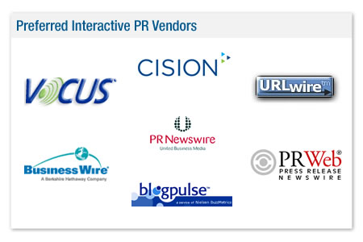

Latest News
- Blueliner CEO to Speak at DMA Seminar on ‘2008: Most Powerful Web Design Trends’
- Crain’s New York Business: Outsourcing Moves to Bangladesh (Dec 2007)
- Blueliner Marketing Expands in Bangladesh, the New Hub for Offshore Outsourcing (November 26, 2007)
- 2008 B2B Search Marketing Strategy Guide: Advice From the Pros (Nov 2007)
Interactive PR
We offer customized, interactive PR solutions to help our clients take advantage of the Internet, while establishing credibility in an overcrowded ‘online marketplace’.
Interactive PR is an important tool for businesses to utilize in concert with traditional Public Relations.
Our Interactive PR specialists design a highly customized online media strategy for businesses of all sizes. We have spent countless hours developing relationships with online media folks from websites like Forbes.com, WSJ.com, blackenterprise.com, Mediapost.com, Adotas.com, iVillage.com, Fool.com, Newsweek.com, Barrons.com, Inc.com and hundreds more!
We also have strong ties with popular bloggers and ezine publishers that are seeking relevant news, creative bylines and product launch announcements.
Interactive PR and SEO
Getting online media placement can significantly boost the organic search rankings of your website. One inbound link from a high-powered media site can far exceed the value of hundreds of links from directories and reciprocal links. To learn more about the effectiveness of combining Interactive PR efforts with SEO, speak to a Blueliner Interactive PR specialist.
Our Interactive PR services include:
- Interactive PR Strategy
- Categorizing A, B and C-list web PR targets and formulating a relationship-building strategy with respective media outlets. The use of RSS feeds is critical, as media professionals utilize them to gather content.
- Copywriting
- Develop keyword rich copy for bylined articles, press releases, electronic media kits and blogs.
- Ezine Targeting
- Ezines offer a wonderful chance to gain exposure in targeted and niche markets. Blueliner will seek and integrate your content within as many suitable ezines as possible.
- Media Placement
- Online publications need to be contacted on a consistent basis. Blueliner will ensure that editorial opportunities do not pass you by.
- Wire Distribution
- The speed with which wire distribution enables contact with various editorial staff and websites can be a major competitive advantage.
- Social Bookmarking
- We can help you implement social bookmarking strategies for your site including setting up accounts with popular sites like Digg and del.icio.us.
- Online Reputation Management
- As the world shifts more focus toward online research, the importance of knowing what other people are saying about your company increases significantly. Blueliner will monitor and track the pulse of the Web to assess your online reputation, while developing an outreach program to cater to the needs of your online customers and prospects.

For a free consultation, contact an Interactive PR Specialist today.